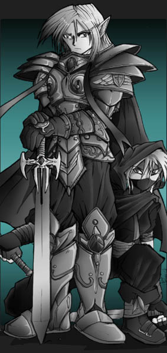

You have reached the online game Dominion.
What is Dominion? It's a TOTALLY
FREE online fantasy war game. You take control of a plot of
land in a realm consisting of a group of other players. With your
dominion and allied players, you combat the forces of good or evil using
military, magic, or espionage. The goal? To finish at the top
of the heap. To make your dominion and your realm the most powerful
in the land, and to crush your enemies.
A great many years ago, great Dragons ravaged the lands. The races of good and evil set aside their differences and joined with the mysterious Planewalkers to vanquish the growing Dragon threat. Years later, the undead Lich King Nox used a tome of power to raise the dragon spirits. The undead dragons again fueled terror across the lands, but the tome was stolen by the forces of Good and used to summon Titans to combat the dragon plague. The war raged on, and years since their disappearance, the Planewalkers reappeared, banishing the dragons and titans to other planes of existence. This time, though, the Planewalkers came not to aid, but to conquer. Opening a planar gate to their world, Nox stepped through and began his own conquest. Forced to retreat home, the Planewalkers left carnage and a new, evil army under Nox's control.
Other races have risen up and grown in power over the years. The forests run wild with the growth of the Sylvans. The oceans fill with the vast armies of Lizardfolk. From the frosted mountain peaks emerged the magical powers of the Icekin, and from cavernous depths arose the Firewalkers. Orcs, Goblins, Elves and Dwarves also share the land, amongst others, fighting between themselves and other forces in endless war.
Around the lands, these and other races strive for power, battling one another for territory and strength. What will happen this round? Will Goblin hordes rampage through the lands? Or will the Humans crusade over the lands ruled by the Undead? Will another force rise out of the ashes to dominate the lands? Create a Dominion now, and add your forces to the battle. The fate of the world may hinge on your decision.
|
 |